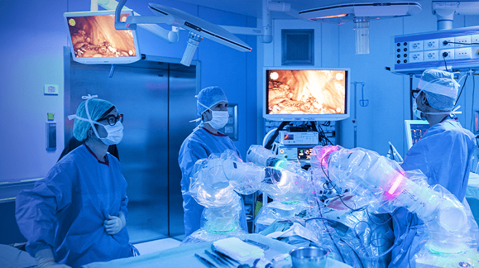
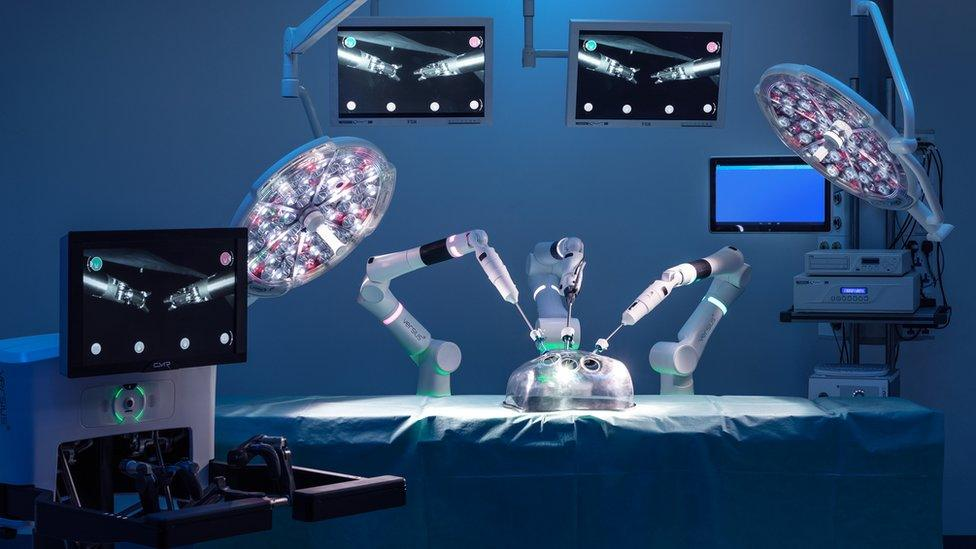
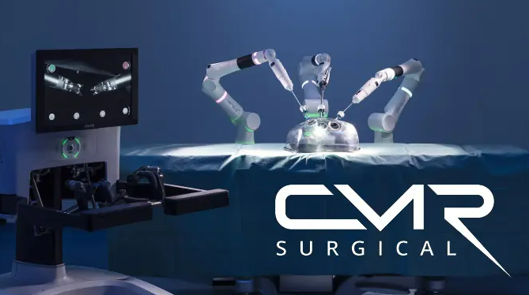

CMR Surgical
Graduate System Test Engineer
Analysing data results and executing unit tests to support submissions for medical regulations.
Conducted code reviews with constructive feedback to ensure compliance with coding best practices and regulation requirements.
Mentored a team of 3 interns through using git version control, test execution, test edge cases, identifying bugs and reporting.
Investigating System bugs and behaviour for a surgical robotics system.
Automating tasks involved with systems in the field.
Performing repairs and rework on units.
Past Roles Include: System Test Intern.


